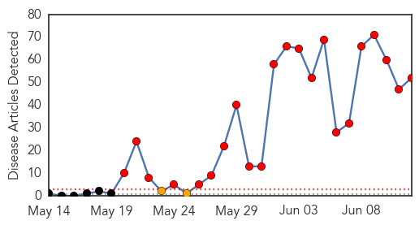
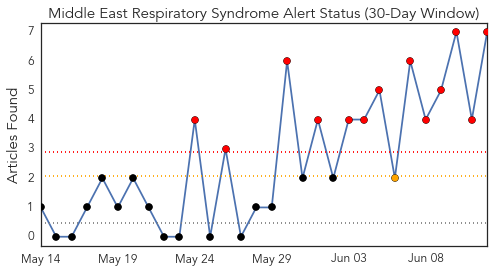
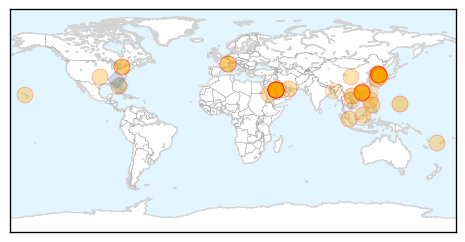
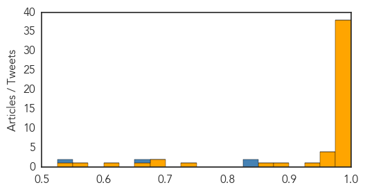

Toggle navigation
Early Warning
Daily Alerts
Middle East Respiratory Syndrome
Jun 12, 2015
Compare to:
-
Dengue Fever
Hemmorhagic Fever
Mold/Fungal Infection
Influenza
Meningitis
Pertussis / Whooping Cough
Cholera
Hepatitis
Chikungunya
Yellow Fever
Bubonic Plague
West Nile Virus
Swine Flu
Ebola
Measles
Unknown
Mumps
30 Day Trends
Web: 22
alerts
, 2
warnings
Twitter: 6
alerts
, 0
warnings
Top Articles:
Showing top 50 articles...
1.000
What you should know about MERS, the mystery disease that has South Korea on edge
1.000
South Korea Reports 11th Death from MERS
1.000
What You Need to Know About Middle East Respiratory Syndrome
1.000
CDC warns doctors to screen patients for MERS virus
1.000
10 Essential Facts About MERS
1.000
MERS outbreak in South Korea can probably be beat: WHO
1.000
MERS closes 2 hospitals
0.999
South Korea reports 14 new MERS cases, taking total to 122
0.999
South Korea seals two Mers hospitals as officials say worst may be over, East Asia News & Top Stories
0.999
CDC Issues Advisory to US Hospitals over South Korea MERS Outbreak
0.999
Breathe Easy: Sultanate is MERS-Free
0.998
S Korea MERS epidemic: worst may be over
0.998
South Korea says 11th patient has died of Mers infection as two hospitals sealed off
0.998
S. Korea, WHO experts downplay pandemic potential of MERS
0.998
Fiji Times Online
0.998
South Korea MERS outbreak shows signs of slowing
0.998
Kingdom, South Korea see no MERS letup
0.998
S. Korea, WHO experts downplay pandemic potential of MERS
0.998
Northern Voices Online USA MERS outbreak threat
0.997
MERS—the latest threat to global health security
0.997
Korea's MERS outbreak a wake-up call: WHO
0.997
South Korea's MERS outbreak should be a wake-up call for the world: WHO expert
0.997
South Korea's MERS outbreak should be wake-up call, WHO expert says
0.997
South Korea's MERS outbreak yet another wake-up call: WHO
0.997
U.S. hospitals warned to be on lookout for MERS cases
0.997
South Korea’s MERS outbreak should be a wake-up call for the world: WHO expert
0.995
U.S. hospitals warned to be on lookout for MERS cases
0.994
No MERS cases known in Brunei, news, Health News, AsiaOne YourHealth
0.994
CDC warns about South Korean MERS outbreak
0.994
MERS infections abate in S.Korea with 4 more cases - Xinhua
0.991
Expert answers questions about MERS
0.988
Korean Airlines and Asiana flights should be sterilized
0.985
China orders airlines to sterilize planes flying from S. Korea
0.984
No MERS cases known in Brunei
0.981
China's aviation regulator orders enhanced MERS control
0.980
China orders airlines to sterilize planes flying from S. Korea
0.978
Juvenile camels 'key source' of Mers
0.976
Juvenile camels key source of Mers - Click Ittefaq
0.972
MERS could dent travel to Korea
0.967
SKorean MERS deaths rise amid signs of outbreak easing
0.967
‘Doctor Shopping’ Helped Spread Deadly MERS Virus
0.964
Travelers avoid South Korea amid MERS scare, but will it last?
0.949
PH postpones Independence Day celebration in South Korea
0.885
Riyadh, Seoul to cooperate on fighting MERS virus
0.869
KUNA : Japan sends expert to MERS-hit S. Korea
0.741
The MERS Scare: an On-the-Ground Report From Korea
0.682
Sample Test of S. Korean death in Vietnam shows negative to MERS - Xinhua
0.677
Sample Test of S. Korean death in Vietnam shows negative to MERS
0.661
Korean cosmetics lose US$5.4B due to MERS
0.619
June 11 Asia-Pacific news summary at 1000 GMT -
Top Tweets:
0.845
RT: Updated info guidelines for eval of patients for Middle East Respiratory Syndrome Coronavirus (MERS-CoV) infection: http…
0.845
RT: Updated info guidelines for eval of patients for Middle East Respiratory Syndrome Coronavirus (MERS-CoV) infection: http…
0.658
Updated info guidelines for eval of patients for Middle East Respiratory Syndrome Coronavirus (MERS-CoV) infection:
http://t.co/IZv6kwUv15
0.533
RT: S. Korea-Gov announces 12 new coronavirus MERS cases & 4th death today-total cases=138total deaths=14 -June 12 https:/…
Web/News Articles

Tweets

Article Locations

Article Confidences
